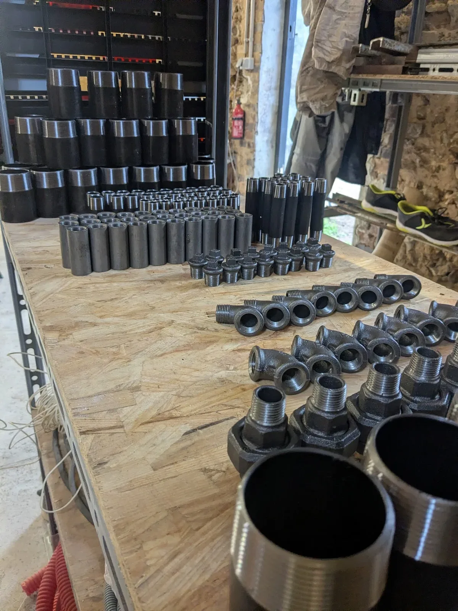

Pré-fabrication de Tuyauterie Industrielle
Conception et fabrication sur-mesure en atelier pour une installation optimale sur vos sites industriels.
La pré-fabrication en atelier : une expertise au service de votre productivité
JOFAGIST maîtrise l'ensemble de la chaîne de pré-fabrication de tuyauterie industrielle, de la lecture de plans isométriques à la livraison des sous-ensembles prêts à poser sur site.
Contrairement aux méthodes traditionnelles de fabrication sur chantier, notre approche en atelier garantit un environnement de travail contrôlé, des soudures de qualité supérieure, et une traçabilité complète des matériaux et des opérations.
Nous intervenons pour des clients de toutes tailles : PME industrielles, grands groupes, bureaux d'études, entreprises générales de tuyauterie.

De la lecture de plans à la livraison sur site
Un processus structuré pour garantir qualité, délais et conformité à vos spécifications techniques.
Analyse des plans et des spécifications
Étude de vos plans isométriques, cahiers des charges et normes applicables (EN 13480, CODAP, etc.).
Approvisionnement des matériaux
Sélection et commande des matières premières certifiées auprès de fournisseurs qualifiés. Traçabilité garantie.
Débit, cintrage et préparation
Découpe précise, cintrage à froid ou à chaud, chanfreinage des extrémités selon les exigences de soudage.
Assemblage et soudage en atelier
Soudage qualifié selon les procédures QMOS, réalisé dans des conditions optimales de contrôle.
Contrôles et essais
Contrôle visuel, dimensionnel et si requis : radiographie, ressuage, épreuve hydraulique.
Livraison et montage sur site
Conditionnement soigné, transport et assistance au montage sur votre site industriel.

Les avantages de la fabrication en atelier
La pré-fabrication transforme votre organisation de chantier et améliore la qualité finale de vos installations.
Réduction des délais chantier
La fabrication en parallèle du génie civil réduit considérablement la durée d'installation sur site. Les sous-ensembles arrivent prêts à poser.
Qualité supérieure et contrôlée
Un atelier offre des conditions de travail optimales : éclairage, outillage, contrôle continu. La qualité des soudures et des assemblages est systématiquement supérieure.
Sécurité et réduction des risques
Moins d'interventions en hauteur ou en espace confiné sur site. Le travail en atelier réduit significativement les risques d'accidents.
Maîtrise des coûts
Meilleure productivité en atelier, moins d'heures perdues sur chantier, réduction des déchets. La pré-fabrication optimise votre budget.
Traçabilité complète
Chaque pièce est tracée : certificats matière, procédures de soudage, enregistrements de contrôle. Dossier de fabrication complet livré avec chaque commande.
Démarche environnementale
Réduction des déchets sur site, optimisation des chutes en atelier, gestion rigoureuse des matières : une approche plus respectueuse de l'environnement.
Quelques exemples de pré-fabrication


Nous intervenons dans de nombreux secteurs industriels
Énergie
Centrales thermiques, réseaux de chaleur, géothermie, biomasse.
Chimie & Pharmacie
Tuyauteries process haute pureté, inox 316L, polypropylène, PTFE.
Agroalimentaire
Réseaux sanitaires, vapeur, eau froide, nettoyage en place (NEP).
Traitement des eaux
Stations d'épuration, usines de traitement, réseaux d'eau potable.
Un projet de tuyauterie industrielle ?
Transmettez-nous vos plans et spécifications. Nous vous proposons un chiffrage détaillé sous 48h.